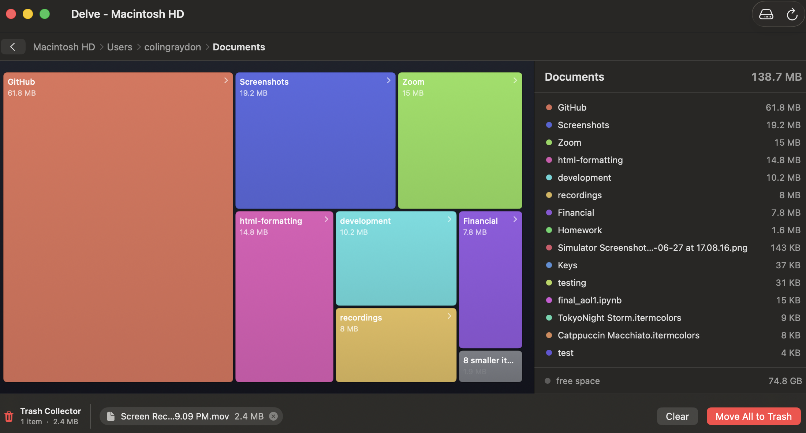

Delve scans a drive or folder and draws what's using your space as an interactive treemap, where bigger files make bigger tiles, so the space hogs are obvious at a glance. Free and open source.

Free, open software for finding the big stuff fast.
Every file and folder is a tile sized by the space it uses, in distinct colors so neighbors are easy to tell apart.
Click a folder tile to zoom in, then use the breadcrumbs or back button to step right back out.
The current folder's contents listed largest-first, with sizes and color dots that match the map.
Drag tiles onto the trash can, review the queue, then Move All to Trash, with a 5-second countdown and Undo.
Delve refuses to trash system locations, your home folder, and media libraries. Nothing is ever permanently deleted.
MIT licensed, written in Swift & SwiftUI. Build it yourself or browse every line on GitHub.
It's an unsigned build, so the first launch takes one extra click.
Grab the latest Delve.dmg above, then drag Delve into your Applications folder.
Right-click (or Control-click) Delve in Applications, choose Open, then click Open again. You only need to do this once.
For a complete scan of your startup disk, allow Delve under System Settings → Privacy & Security → Full Disk Access.
xattr -dr com.apple.quarantine /Applications/Delve.app